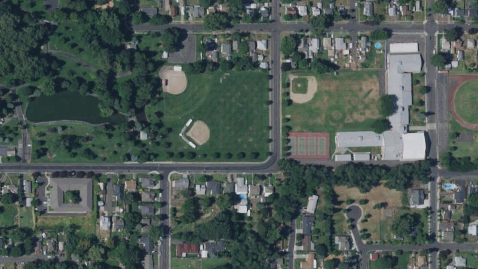
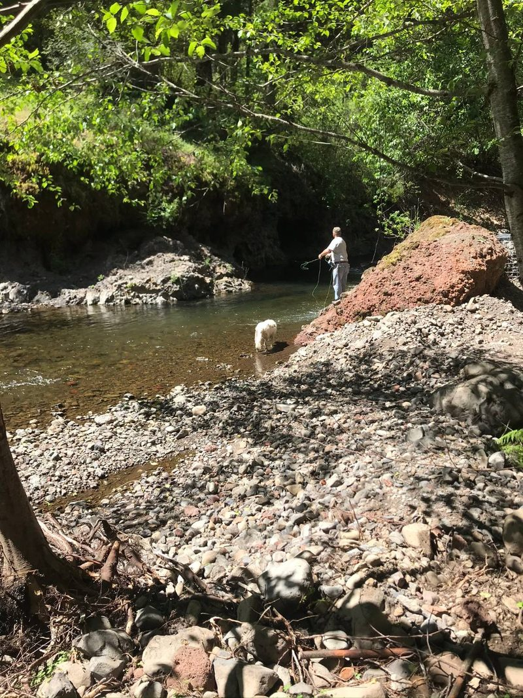
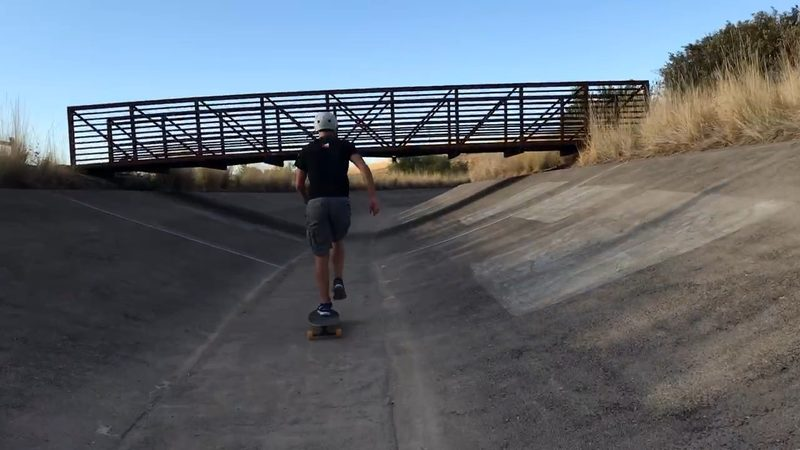
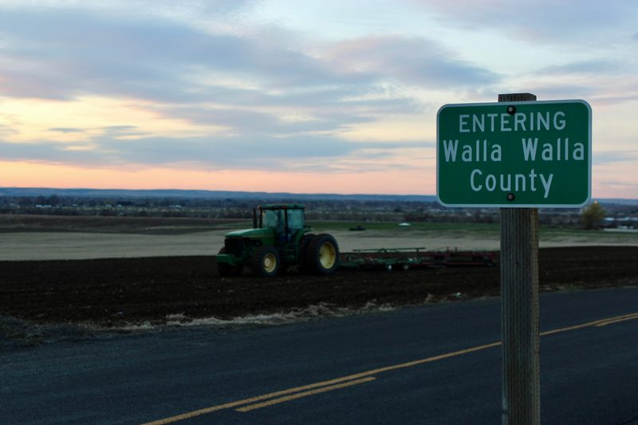

A little over half an acre on Garrison Creek. About 80% of it inside the band.
The lot is on Home Avenue, one of about 1,490 city lots the proposed band touches. Today the creek buffer there is 35 feet. The draft makes it 100 feet, with a 15-foot building setback beyond that. On this lot that leaves at most about a fifth of the ground, outside the band, for anything new: an addition toward the creek, a shop, a shed or an ADU would have to fit there, behind the setback.
The house stays. Under existing code, a home damaged by fire or any other cause keeps its grandfathered status only if a permit application is filed within six months.
Across the city, 1,200 of the touched lots are homes and 178 are undeveloped lots. On 879 of all the touched lots the band covers more than half the ground.
Lot figures come from County parcel records and the City's published 100-foot band, the same result the checker above returns. The owner is not named.

The Home Avenue neighborhood along Garrison Creek, from the air. USDA NAIP aerial imagery via USGS The National Map (public domain)Schematic, not to scale: a creek-side lot with the proposed 100-foot band and the 15-foot building setback beyond it.
The City's own Planning Commission already sent it back.
On Sept 14, after 13 residents testified, the Planning Commission voted 7-0 to recommend that Council have staff revise the draft using science matching local conditions. The Oct 9 hearing draft still proposes a flat 100 feet on every creek.
No state law sets 100 feet. The state Department of Fish and Wildlife's own letter on this draft says a site evaluation "would be best." Council hears the public Wed Oct 14 and is scheduled to vote Oct 28. Comments are being heard; one sentence from you adds to the record.

Casting from a gravel bar, a dog in the shallows. Photo: shrubn.com
Healthy creeks and buildable lots are not a trade. Every named creek in town is fish-bearing; the question is the right width for each creek, not whether to protect it.

The concrete Mill Creek flood channel through town. Photo: shrubn.com
Mill Creek is the exception. Its concrete flood channel through town stays under the City's Shoreline Master Program, with a 35-foot flood-channel band today; the draft does not change it.
What the City's own numbers show
Three of the nine charts, from the City's GIS layers and County parcel records.
The hearing is Wed Oct 14, 2026, 6:30 pm, City Hall, 15 N 3rd Ave (agenda Item 6E). Three minutes per speaker, in person or by Zoom (meeting ID 845 3179 8905). Written comments sent to CityClerk@wallawallawa.gov before the hearing go into the record. The adoption vote is scheduled Oct 28.

“Entering Walla Walla County” sign at sunset, fields and the valley beyond. Photo: shrubn.com
Your street
The eight streets with the most touched lots: S 2nd Ave, Fern Ave, Pleasant St, Newell St, Bryant Ave, Howard St, Lincoln St and Home Ave.
Live on one of them? Be the neighbor who tells the street. Volunteer as a street captain: use the form, name your street, and you'll get the sign, the hearing card and the lot count for your street.
Tell us about your property
Who you are, whether you own inside city limits, and what the proposed buffer would change for you. One short form; the organizers read every entry.
One sentence about your own lot or street counts more than an identical form letter. Send one sentence to Council, then ask one neighbor to do the same.
The ask, in four points
Honor the Planning Commission's 7-0 recommendation of Sept 14: revise the draft before adopting it.
Get a locally scoped best-available-science review.
Replace the single 100-foot width with tiered buffers that reflect each creek's condition and fish use, and publish a parcel and housing-capacity analysis first.
Protect existing homes in writing: repairs, additions and ADUs on the side away from the creek, and rebuilding after fire without losing grandfathered status in six months under existing code.
Lot and parcel counts come from the City's published 100-foot band intersected with County parcel records (Sept 2026); how we computed this and all nine charts. The band is drawn from stream centerlines; the ordinance measures from the ordinary high-water mark, top of bank or channel migration zone, whichever is greater, so the real edge may be closer than shown.
This map is a community awareness tool, not an official determination. Stream lines and the 100-foot band come from the City of Walla Walla's own public GIS layers (published Oct 6, 2026), measured from stream centerlines. The proposed ordinance measures buffers from the ordinary high water mark, top of bank, or channel migration zone, whichever is greater, so the regulated area may be larger than shown. Only the City can determine whether a specific property is subject to critical-areas rules. Nothing here is legal advice. Confirm with City of Walla Walla Development Services (509-524-4710, permits@wallawallawa.gov) or a land-use attorney before you buy, sell, build, or decide anything about your property.
We will never sell your personal data. We don’t collect your address searches into a CreekChecker database. Privacy & civic purpose
Photo credits
Photos on this site, in order of first use. Open-license images keep their authors' attribution; Corben's own photos are used with permission.
Sunset over the creek from the path, Walla Walla — Corben (shrubn.com), Owner-supplied (Corben), used with permission
The Home Avenue neighborhood along Garrison Creek, from the air — USDA Farm Service Agency (NAIP), served by USGS The National Map, Public domain (U.S. federal government work)
Fishing a clear pool from the bank — Corben (shrubn.com), Owner-supplied (Corben), used with permission
The concrete Mill Creek flood channel through town — Corben (shrubn.com), Owner-supplied (Corben), used with permission
“Entering Walla Walla County” sign at sunset, fields and the valley beyond — Corben (shrubn.com), Owner-supplied (Corben), used with permission
Morning sun over the trees and a meadow — Corben (shrubn.com), Owner-supplied (Corben), used with permission
Mill Creek Channel at high water, Walla Walla, 7 February 2020 (U.S. Army Corps of Engineers) — Joseph Saxon, U.S. Army Corps of Engineers, Northwestern Division, Public domain (U.S. federal government work) · source
Bandstand in Pioneer Park, Walla Walla (2013) — Robert Ashworth, CC BY 2.0 · source
A creek, its gravel bar and cottonwoods below the hills — Corben (shrubn.com), Owner-supplied (Corben), used with permission
A valley road toward the Blue Mountains — Corben (shrubn.com), Owner-supplied (Corben), used with permission
The Blue Mountains from the Walla Walla Valley (February 2011) — Agne27, CC BY-SA 3.0 · source
CreekCheckerWalla Walla · Washington
Check your creek.
Is your Walla Walla lot inside the proposed 100-foot creek buffer?
Find your property at creekchecker.com. Read what the draft says and tell the City Council before the vote.
17.9 mimapped creeks
477 acin the band
1,489city parcels touched
Our computation from City GIS centerlines and County parcels, Oct 10, 2026. The consultant’s broader network: 269 to 757 acres (Facet, July 1, 2026). Method: creekchecker.com/method.html.
Today: 35 ft, or 50 ft on Yellowhawk. Proposed: 100 ft plus a 15-ft building setback (Oct 9 draft, Table 6 and setback provisions).
On Sept 14, 2026, the Planning Commission voted 7-0 to send the draft back for science matching local conditions (draft Commission minutes).
Public hearing · October 14
Wednesday, October 14, 2026 · 6:30 pm City Hall · 15 N 3rd Ave · Walla Walla
Vote scheduled October 28, 2026. Written comments: CityClerk@wallawallawa.gov
Source: City Council Oct 14 agenda, Item 6E; City CAO project page.
This map is a community awareness tool, not an official determination. Stream lines and the 100-foot band come from the City of Walla Walla's own public GIS layers (published Oct 6, 2026), measured from stream centerlines. The proposed ordinance measures buffers from the ordinary high water mark, top of bank, or channel migration zone, whichever is greater, so the regulated area may be larger than shown. Only the City can determine whether a specific property is subject to critical-areas rules. Nothing here is legal advice. Confirm with City of Walla Walla Development Services (509-524-4710, permits@wallawallawa.gov) or a land-use attorney before you buy, sell, build, or decide anything about your property.